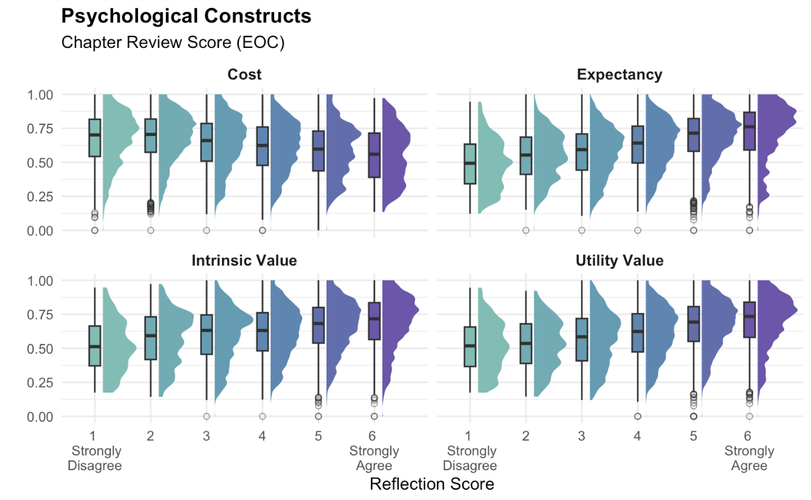

About
DataFest is a 48 hour data analysis marathon hosted by the American Statistical Association. Every year, undergraduates all across the United States are provided a large, rich, and complex data set. Students are tasked with wrangling, analyzing and presenting insights, as they work around the clock to prepare a brief presentation for a panel of judges.
Students are prohibited from sharing detailed information about the data for confidentiality. This post will be limited to my reflection on the experience.
Clock Starts
Explore
To kick-off the event, we were shown a video introducing the data set. The data were sectioned into multiple CSV files and we started by delegating the files to each of the four members of our team. Our intent was to orient ourselves with the data, read the documentation, and conduct preliminary exploratory analysis.
We allotted time for the team to come together and discuss collectively the highlights and interesting characteristics from each of our sets. It was important that we kept tabs on what kind of information each team member had so that we were able to join data sets in the later analysis.
This year at Cal Poly, I’m applying a new approach to learning and asking questions. In the statistics industry, we see our fair share of formulas. Many of my peers commit formulas to memory and score highly on exams. I wonder, though, the extent to which we can make claims about these students’ material acquisition based on their exam scores. I, for one, am not so good at memorizing formulas. Instead, I began asking myself about the story that the course is telling. After all, intelligent and thoughtful academics design these courses, write our textbooks, and they do so with intent about the order and nature in which content is taught. After all, we should teach algebra before teaching calculus because algebra is a dependency of calculus. I think there’s an subtle opportunity here for students to tune into the course narrative and enhance their comprehension. I’ve started attending office hours and asking my instructors to take me through the narrative and answer some of the “why’s” regarding the order and nature by which material is taught. It’s also a great way to look back on the term in preparation for final exams.
Looking back, I wish our team took more time to think and share about potential stories that were emerging from the data, per my thoughts above. After regrouping, our team set out to continue wrangling the data and begin drawing relationships between variables.
Roadblock
Half-way through the competition, our team was hitting roadblocks and was feeling unhopeful. Each of us was building a separate component of the presentation. I was focused on joining two data sets to extract a broader, philosophical claim from the data and my team was reasonably skeptical. The data wrangling was taking me longer than we anticipated and other analyses were appearing insignificant or disjointed. Needless to say, it took each of us a break and a walk around campus before coming back the data and making a few more strides forward.
My sub-project was finally bearing something useful. I was able to arrange and clean the data appropriately, and they were ready to be graphed. I paired up with another group member to help with creating a set of box plots and adding density overlays. The rest of our team worked on aesthetics, accessibility, and synthesizing some of their quantitative findings to further drive the narrative. They built our presentation and we worked together on a script.
Conclusion
We presented our findings proudly and were hopeful that our visualization would impress the judges. And it did, indeed, as our team was awarded with Best Visualization. An exciting and challenging experience, DataFest provided us an opportunity to test our skills in a rapid succession of EDA, statistical analysis, story-boarding, and oral communication.
{fig-alt = “Four panes with six, cool colored box plots and corresponding density ridge plots. Chapter reflection score (EOC) is the response variable and reflection score is the explanatory variable. Each pane represents a psychological construct that the reflection score was measuring. These include cost, expectancy, intrinsic value, and utility value. The plots reveal and upward trend in EOC as the reflection score increased for all constructs except cost.”}